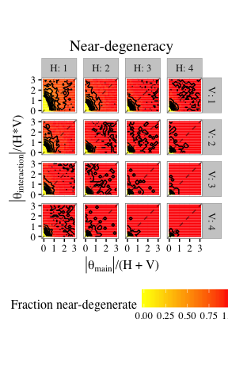
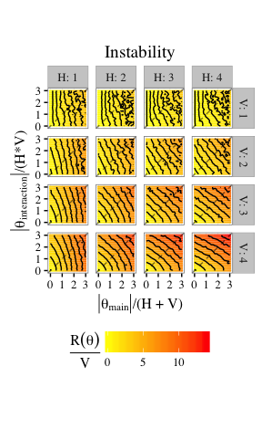
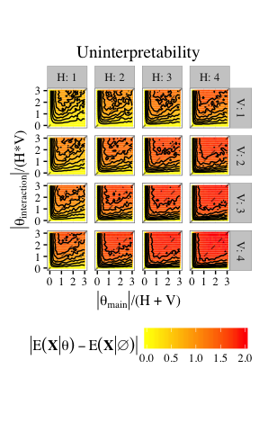
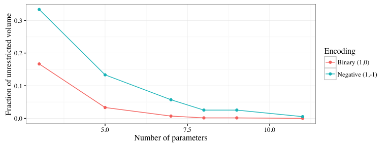
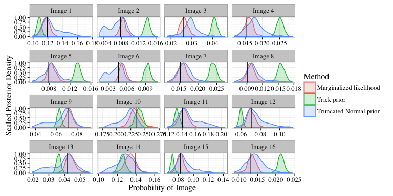

An exposition on the propriety of restricted Boltzmann machines

Andee Kaplan, Daniel Nordman, and Stephen Vardeman
Iowa State University
July 31, 2016
JSM - Chicago, IL
http://bit.ly/jsm2016-rbm
Restricted Boltzmann machines
What is this?
Restricted Boltzmann machine (RBM) with two layers - hidden (\(\mathcal{H}\)) and visible (\(\mathcal{V}\)) [smolensky1986information].

 Used for image classification. Each image pixel is a node in the visible layer. The output creates features, passed to supervised learning.
Used for image classification. Each image pixel is a node in the visible layer. The output creates features, passed to supervised learning.
Joint Distribution
Let \(x = \{h_1, ..., h_H, v_1, ...,v_V\}\) represent the states of the visible and hidden nodes in an RBM. Then the probability each node taking the the value corresponding to \(x\) is:
\[
f_{\theta} (x) = \frac{\exp\left(\sum\limits_{i = 1}^V \sum\limits_{j=1}^H \theta_{ij} v_i h_j + \sum\limits_{i = 1}^V\theta_{v_i} v_i + \sum\limits_{j = 1}^H\theta_{h_j} h_j\right)}{\sum\limits_{x \in \mathcal{X}}\exp\left(\sum\limits_{i = 1}^V \sum\limits_{j=1}^H \theta_{ij} v_i h_j + \sum\limits_{i = 1}^V\theta_{v_i} v_i + \sum\limits_{j = 1}^H\theta_{h_j} h_j\right)}
\]
Deep learning
“Deep Boltzmann machine” - multiple single layer restricted Boltzmann machines with the lower stack hidden layer acting as the visible layer for the higher stacked model

Claimed ability to learn “internal representations that become increasingly complex” (Salakhutdinov and Hinton 2009), used in classification problems.
Why do I care?
Current heuristic fitting methods seem to work for classification. Beyond classification, RBMs are generative models:
To generate data from an RBM, we can start with a random state in one of the layers and then perform alternating Gibbs sampling. (Hinton, Osindero, and Teh 2006)
Can we fit a model that generates data that looks like data?
Degeneracy, instability, and uninterpretability. Oh my!
Near-degeneracy
The highly flexible nature of the RBM (\(H + V + HV\) parameters) makes three characteristics of model impropriety of particular concern.
Let \(Q(\cdot)\) denotes the neg-potentional function of the model, having support set \(\mathcal{S}\).
| Disproportionate amount of probability placed on only a few elements of the sample space by the model (Handcock et al. 2003) |
If random variables in \(Q(\cdot)\) have a collective mean \(\mu(\theta)\) close to the boundary of the convex hull of \(\mathcal{S}\). |
Instability
Let \(R(\theta) = \max_{v} \max_{h}Q(x) - \min_{v}\max_{h}Q(x) - H\log 2\).
| Small changes in natural parameters result in large changes in probability masses, excessive sensitivity (Schweinberger 2011). |
If \(R(\theta)/V\) is large, then the the maximum log-likelihood ratio of two images that differ in only one pixel is large. |
Uninterpretability
| Due to the existence of dependence, marginal mean-structure no longer maintained (Kaiser 2007). |
If the magnitude of the difference between model expectations and expectations under independence (dependence parameters of zero), \(\left\vert E( X \vert \theta) -E( X \vert \emptyset ) \right\vert\), is large. |
Manageable (a.k.a. small) examples
 RBMs easily are near-degenerate, unstable, and uninterpretable for large portions of parameter space.
Data coding to mitigate degeneracy
Convex hulls of the statistic space for a toy RBM with \(V = H = 1\) for \(\{0,1\}\) and \(\{-1,1\}\)-encoding enclosed by an unrestricted hull of 3-space.
Data coding to mitigate degeneracy (cont’d)
- For the \(\{-1, 1 \}\) encoding of \(\mathcal{V}\) and \(\mathcal{H}\), the origin is the center of the parameter space
- At \(\theta = 0\), the RBM is equivalent to elements of \(X\) being distributed as iid Bernoulli\(\left(\frac{1}{2}\right)\) \(\Rightarrow\) No near-degeneracy, instability, or uninterpretability!

A tale of three methods
- Trick prior. Cancel out the normalizing term, full conditionals normally dist’d. \[
\pi(\theta) \propto \gamma(\theta)^n \exp\left(-\frac{1}{2C_{1}} \theta_{main}' \theta_{main} -\frac{1}{2C_{2}} \theta_{int}' \theta_{int}\right),
\] where \(\gamma(\theta)\) is the normalizing term (Li 2014).
- Truncated Normal prior. Use two independent truncated spherical normal distributions as priors for \(\theta_{main}\) and \(\theta_{int}\) with \(\sigma_{int} < \sigma_{main}\). Not conjugate \(\Rightarrow\) geometric adaptive MH step (Zhou 2014) and calculation of \(\gamma(\theta)\).
- Marginalized likelihood Marginalize out \(h\) in \(f_{\theta}(x)\), use trunc. Normal prior. \[
g_{ \theta}(v) = \sum\limits_{h \in \{-1,1\}^H} \exp\left(\sum\limits_{i = 1}^V \sum\limits_{j=1}^H \theta_{ij} v_i h_j + \sum\limits_{i = 1}^V\theta_{v_i} v_i + \sum\limits_{j = 1}^H\theta_{h_j} h_j\right)
\]
Posterior distributions of images
 Each of these rigorous fitting methods seeks to merely replicate the empirical data distribution, which is the likelihood maximizer.
Wrapping up
- While RMBs can be useful for classification, in the context of a statistical model as a representation of data, RBMs poor fit due to
- near-degeneracy,
- instability, and
- uninterpretability.
- Rigorous fitting methodology is possible but slow, and ultimately results in the empirical data distribution.
References
Handcock, Mark S, Garry Robins, Tom AB Snijders, Jim Moody, and Julian Besag. 2003. “Assessing Degeneracy in Statistical Models of Social Networks.” Working paper.
Hinton, Geoffrey E, Simon Osindero, and Yee-Whye Teh. 2006. “A Fast Learning Algorithm for Deep Belief Nets.” Neural Computation 18 (7). MIT Press: 1527–54.
Li, Jing. 2014. “Biclustering Methods and a Bayesian Approach to Fitting Boltzmann Machines in Statistical Learning.” PhD thesis, Iowa State University; Graduate Theses; Dissertations. http://lib.dr.iastate.edu/etd/14173/.
Salakhutdinov, Ruslan, and Geoffrey E Hinton. 2009. “Deep Boltzmann Machines.” In International Conference on Artificial Intelligence and Statistics, 448–55.
Schweinberger, Michael. 2011. “Instability, Sensitivity, and Degeneracy of Discrete Exponential Families.” Journal of the American Statistical Association 106 (496). Taylor & Francis: 1361–70.
Zhou, Wen. 2014. “Some Bayesian and Multivariate Analysis Methods in Statistical Machine Learning and Applications.” PhD thesis, Iowa State University; Graduate Theses; Dissertations. http://lib.dr.iastate.edu/etd/13816/.